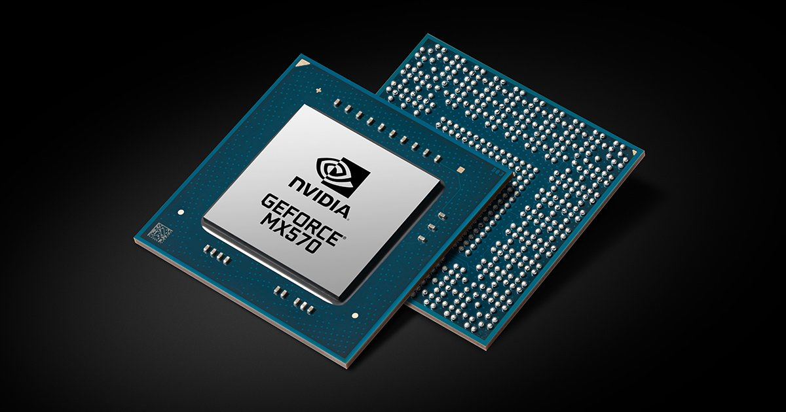
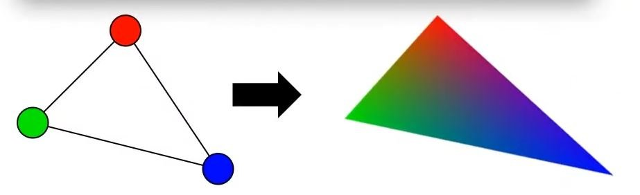

Avant de nous lancer dans l’étude de la programmation de fragment shaders, il me semblait primordial de revenir rapidement sur le pipeline de la carte graphique et ses différentes étapes afin d’avoir une meilleure compréhension de ce processus qui permet d’afficher une scène 3D sur un écran 2D.
Les différences fondamentales entre le CPU et le GPU résident principalement dans leurs architectures, leurs conceptions et leurs fonctions principales. Le CPU est conçu pour exécuter des tâches de manière séquentielle. Le strip 1.1 illustre le processus de dessin d’une image pixel par pixel de manière séquentielle et lente.
En revanche, le GPU est conçu avec un grand nombre de cœurs plus simples (parfois des milliers) qui peuvent travailler simultanément sur des tâches parallèles, offrant une capacité de traitement massivement parallèle pour les opérations graphiques. Le strip 1.2 illustre bien cette caractéristique : le GPU est représenté par une grille de tuyaux qui envoient directement leurs informations sur chaque pixel pour dessiner la Joconde en un instant. Ces strips sont tirés d’une vidéo d’une conférence humoristique de NVIDIA datant de 2008.
D’ailleurs, lorsque l’on parle du pipeline de la carte graphique c’est un abus de langage, on devrait plutôt parler de pipeline du GPU (Graphical Processor Unit). Schématiquement, une carte graphique se compose d’un processeur dédié, le GPU, et d’une mémoire vive spécifique (voir 1.3).


Le rôle principal d’un GPU est de créer des images à partir de données qui décrivent la scène. En général, ces données en entrée sont une collection de triangles, car les triangles sont la forme géométrique atomique pour décrire un objet 3D: avec des triangles, nous pouvons représenter n’importe quel objet en trois dimensions. Avant de pouvoir être exploitées par le GPU, ces données représentant la scène (une collection de coordonnées de sommets1 représentant les triangles dans l’espace 3D) doivent être chargées dans la mémoire vive du GPU. Il faut donc que ces données soient décrites côté CPU avant de les envoyer au pipeline de rendu (voir [pipeline01] et 1.4).


Il faut voir la carte graphique comme une machine capable de parallélisme, c’est à dire qu’elle effectuera ses calculs sur chacun des sommets puis sur chacun des pixels en parallèle. Le même vertex shader s’exécutera une fois pour chaque vertex et le même fragment shader s’exécutera une fois pour chaque pixel comme si la carte graphique possédait des tuyaux dédiés pour chaque pixel. En d’autres termes, si l’écran a une résolution de 1920 × 1080, le fragment shader devra être exécuté 2.073.600 fois par image calculée. Les GPU peuvent gérer cela parce qu’ils colorient de nombreux pixels en parallèle (c’est-à-dire en même temps) grâce à des threads2 dédiés aux calculs de chaque fragment. En particulier pour le fragment shader, le programme ne peut agir que sur un seul pixel à la fois et ne peut pas accéder aux valeurs des pixels voisins. En cela on dit souvent que le shader est aveugle. Il est aussi incapable de se souvenir du résultat du calcul de l’image précédente, en cela on parle d’amnésie du shader.
Un autre avantage du GPU est qu’il possède une accélération matérielle conçue pour optimiser certaines fonctions mathématiques utilisées couramment lors de l’écriture des shaders, comme les opérations sur les matrices ou les calculs trigonométriques.
Le pipeline de traitement graphique assure la conversion des attributs des sommets en une image tridimensionnelle qui est ensuite affichée à l’écran. Les attributs habituels comprennent la coordonnée 3D de chaque sommet, sa coordonnée de texture et sa couleur. Cependant, il est possible d’ajouter n’importe quel attribut car la carte graphique interprétera ces données comme de la « data » pure. Les différentes étapes de ce pipeline, dans leur séquence chronologique, comprennent le vertex shader, le geometry shader, la rastérisation (rasterization en anglais) et le fragment shader. Dans cette section, nous nous concentrerons sur une analyse détaillée du vertex shader, du geometry shader et de la rastérisation. Quant au fragment shader, qui constitue la pierre angulaire du livecoding, il sera décortiqué dans le prochain chapitre.
Voici un exemple très basique d’un vertex shader. On peut remarquer que les données de la scène sont réceptionnées dans les variables (3 coordonnées en X, en Y et en Z) et (3 valeurs pour le rouge, le vert et le bleu et 1 valeur pour l’opacité). On a donc accès à la position et à la couleur de chaque vertex.
attribute vec3 pos;
attribute vec4 col;
void main()
{
gl_Position = vec4(pos,1);
}La variable est une variable de sortie, donc le programme se contente de récupérer la position de chaque vertex et de l’envoyer à la prochaine étape du pipeline (la rastérisation) sans leur appliquer de transformation. On remarque cependant l’ajout d’une quatrième composante avec la valeur 1. Ce 1 indique que nous utilisons des coordonnées homogènes3. En simplifiant on peut retenir que lorsque cette quatrième composante est à 1 cela signifie que l’on désigne une position, et lorsqu’elle est à 0 que l’on désigne une direction.
Le rôle fondamental du vertex shader est de transformer les coordonnées de chaque sommet dans différents espaces, comme nous l’explorerons plus en détail dans la section suivante. Heureusement, les matrices de transformation permettent d’appliquer facilement des opérations telles que la translation, la rotation et la mise à l’échelle sur des objets en 3D. Il est à noter qu’une quatrième composante, notée w, est utilisée pour décrire les coordonnées des sommets. Cette composante facilite la représentation des transformations projectives et simplifie les calculs mathématiques nécessaires au rendu 3D.
La matrice identité4 est couramment utilisée comme point de départ pour les transformations. En effet, elle permet de s’assurer du contenu de la mémoire avant d’effectuer les transformations matricielles. Elle agit comme un élément neutre pour la multiplication matricielle, comme le 0 pour l’addition ou le 1 pour la multiplication. Elle est souvent modifiée en ajoutant des opérations de translation, de rotation ou de mise à l’échelle pour produire des transformations plus complexes. $$\begin{bmatrix} 1 & 0 & 0 & 0\\ 0 & 1 & 0 & 0\\ 0 & 0 & 1 & 0\\ 0 & 0 & 0 & 1 \end{bmatrix} \cdot \begin{bmatrix} 1\\ 2\\ 3\\ 4 \end{bmatrix} = \begin{bmatrix} 1\\ 2\\ 3\\ 4 \end{bmatrix}$$
Si nous remplaçons les 1 de la matrice d’identité par des 3, cela signifie que chaque élément du vecteur serait multiplié par 3 lors de la multiplication matricielle. En conséquence, le vecteur serait uniformément augmenté de 3 dans toutes les directions. En représentant les facteurs d’échelle par (S1, S2, S3), nous pouvons définir une matrice d’échelle pour n’importe quel vecteur (x, y, z) comme suit : $$\begin{bmatrix} S1 & 0 & 0 & 0\\ 0 & S2 & 0 & 0\\ 0 & 0 & S3 & 0\\ 0 & 0 & 0 & 1 \end{bmatrix} \cdot \begin{bmatrix} x\\ y\\ z\\ 1 \end{bmatrix} = \begin{bmatrix} x \cdot S1\\ y \cdot S2\\ z \cdot S3\\ 1 \end{bmatrix}$$
La translation déplace un objet d’une certaine distance le long des axes X, Y et Z. Pour représenter une translation dans une matrice de transformation, on utilise une matrice identité de taille 4 × 4, mais avec des valeurs spécifiques dans la dernière colonne (les trois premières valeurs de la dernière colonne représentent les translations le long des axes X, Y et Z respectivement). Par exemple, pour une translation de tx, ty, tz, la matrice de transformation ressemblerait à cela :
$$\begin{bmatrix} 1 & 0 & 0 & T_x\\ 0 & 1 & 0 & T_y\\ 0 & 0 & 1 & T_z\\ 0 & 0 & 0 & 1 \end{bmatrix} \cdot \begin{bmatrix} x\\ y\\ z\\ 1 \end{bmatrix} = \begin{bmatrix} x + T_x\\ y + T_y\\ z + T_z\\ 1 \end{bmatrix}$$
La rotation fait tourner un objet autour des axes X, Y et Z. Les rotations peuvent être définies en radians ou en degrés. Pour chaque axe de rotation, il existe une matrice de rotation correspondante. Par exemple, pour une rotation autour de l’axe X par un angle θ, la matrice de rotation serait : $$\begin{bmatrix} 1 & 0 & 0 & 0\\ 0 & \cos{\theta} & -\sin{\theta} & 0\\ 0 & \sin{\theta} & \cos{\theta} & 0\\ 0 & 0 & 0 & 1 \end{bmatrix} \cdot \begin{bmatrix} x\\ y\\ z\\ 1 \end{bmatrix} = \begin{bmatrix} x\\ \cos{\theta} \cdot y - \sin{\theta} \cdot z\\ \sin{\theta} \cdot y + \sin{\theta} \cdot z\\\\ 1 \end{bmatrix}$$
Pour la matrice de rotation autour de l’axe Y, on observe que cette matrice est semblable à celle de la rotation autour de l’axe X, à la différence près que des zéros ont été insérés dans la deuxième ligne et la deuxième colonne, à l’exception de la diagonale où un 1 est conservé pour maintenir la position inchangée.
$$\begin{bmatrix} \cos{\theta} & 0 & \sin{\theta} & 0\\ 0 & 1 & 0 & 0\\ -\sin{\theta} & 0 & \cos{\theta} & 0\\ 0 & 0 & 0 & 1 \end{bmatrix} \cdot \begin{bmatrix} x\\ y\\ z\\ 1 \end{bmatrix} = \begin{bmatrix} \cos{\theta} \cdot x + \sin{\theta} \cdot z\\ y\\ -\sin{\theta} \cdot x + \cos{\theta} \cdot z\\ 1 \end{bmatrix}$$
Le même phénomène se produit pour la rotation autour de l’axe Z mais avec la troisième ligne et la troisième colonne.
$$\begin{bmatrix} \cos{\theta} & -\sin{\theta} & 0 & 0\\ \sin{\theta} & \cos{\theta} & 0 & 0\\ 0 & 0 & 1 & 0\\ 0 & 0 & 0 & 1 \end{bmatrix} \cdot \begin{bmatrix} x\\ y\\ z\\ 1 \end{bmatrix} = \begin{bmatrix} \cos{\theta} \cdot x - \sin{\theta} \cdot y\\ \sin{\theta} \cdot x + \cos{\theta} \cdot y\\ z\\ 1 \end{bmatrix}$$
Il était utile d’aborder le fonctionnement des matrices de transformation, car le vertex shader a pour objectif de convertir efficacement une représentation spatiale en une autre. Le rôle principal du vertex shader est de transformer les coordonnées 3D de notre objet en coordonnées 3D normalisées5 qui s’afficheront à l’écran. Ces coordonnées doivent se situer dans l’intervalle [−1, 1], car les sommets avec des coordonnées en dehors de cette plage ne seront pas visibles à l’écran. Le problème dans le code précédent est que nous nous contentons de passer les coordonnées 3D des sommets sans appliquer de transformation. La transformation des coordonnées en NDC se fait étape par étape, en passant par cinq systèmes de coordonnées différents :
Coordonnées du modèle (Model Space)
Coordonnées du monde (World Space)
Coordonnées de la vue (View Space ou Eye Space)
Coordonnées de projection (Clip Space)
Coordonnées normalisées de l’écran (NDC)
Le vertex shader est responsable de la transformation des coordonnées du modèle en coordonnées normalisées de l’écran, en appliquant une série de transformations matricielles appropriées à chaque sommet de l’objet (voir 1.5). Effectivement, chaque étape de transformation des coordonnées vers les coordonnées normalisées de l’écran s’appuie sur des matrices de transformation, parmi lesquelles figurent les matrices de modèle, de vue et de projection.
Initialement, nous disposons des coordonnées locales de notre objet par rapport à son origine locale. L’espace local représente les coordonnées locales de l’objet, c’est-à-dire l’endroit où il est créé ou modélisé. Par exemple, si nous créons un cube dans un logiciel de modélisation comme Blender, ce cube sera généralement centré autour de l’origine de l’espace local.
Dans l’espace local, les coordonnées de chaque sommet sont définies par rapport au centre de l’objet. Cependant, pour rendre cet objet dans une scène 3D, nous devons le placer et l’orienter par rapport à la scène globale. C’est là que la matrice de modèle entre en jeu : elle permet de transformer les coordonnées locales de l’objet en coordonnées du monde, en appliquant des transformations telles que la translation, la rotation et la mise à l’échelle. Une fois que les coordonnées sont dans l’espace du monde, elles sont transformées dans l’espace de vue (ou espace œil) à l’aide de la matrice de vue.
Dans cet espace, la caméra est positionnée à l’origine et les objets sont positionnés et orientés par rapport à la caméra. Cette transformation permet de simuler le déplacement et l’orientation de la caméra dans la scène.
Ensuite, les coordonnées de vue sont transformées dans l’espace de projection à l’aide de la matrice de projection. Dans cet espace, les coordonnées sont projetées dans un espace 3D canonique, où les coordonnées X, Y et Z sont normalisées et se trouvent dans la plage [−1, 1]. Cette étape permet de déterminer quels objets sont visibles à l’écran et on peut utiliser soit la projection en perspective, soit la projection orthographique. Enfin, les coordonnées de projection sont transformées en coordonnées normalisées de l’écran (NDC) en divisant les coordonnées par leur composante w (homogène). Cela place les coordonnées dans une plage standardisée de [−1, 1], ce qui permet de déterminer quels sommets et quelles parties de la scène seront rendus à l’écran. Le volume qui détermine si un sommet sera affiché ou non s’appelle le frustum6.
Nous venons de mentionner qu’il existe deux types principaux de matrices de projection : la matrice de projection orthographique et la matrice de projection en perspective. Contrairement à la projection perspective , où les objets plus éloignés sont réduits en taille, la projection orthographique conserve la taille relative des objets, indépendamment de leur distance par rapport à la caméra. Cela signifie que les objets éloignés apparaissent de la même taille que les objets proches. La projection orthographique, quant à elle, est souvent utilisée dans les rendus 2D et dans certaines applications architecturales ou d’ingénierie où l’on souhaite éviter les déformations des objets dues à la perspective. Elle offre une représentation plus fidèle des dimensions et des proportions des objets, ce qui peut être préférable dans certains cas d’utilisation. Une application comme Blender, qui est utilisée pour la modélisation 3D, utilise parfois la projection orthographique pour la modélisation car elle représente plus précisément les dimensions de chaque objet (voir 1.6).

Dans le processeur central (CPU), après avoir défini une matrice de transformation pour chacune des étapes susmentionnées (modèle, vue et projection), on transforme les coordonnées de chaque sommet en coordonnées de l’espace NDC comme suit:
attribute vec3 pos;
attribute vec4 col;
void main()
{
gl_Position = m_proj * m_view * m_model * pos;
}Le geometry shader (ou nuanceur de géométrie en français) est aussi une étape programmable mais optionnelle qui se situe entre le vertex shader et le fragment shader. Le geometry shader prend en entrée un ensemble de sommets qui forment une primitive unique, par exemple un point ou un triangle. Le geometry shader peut ensuite transformer ces sommets comme il l’entend avant de les envoyer à l’étape suivante du pipeline. Ce qui rend le geometry shader intéressant, c’est qu’il est capable de convertir la primitive d’origine (ensemble de sommets) en des primitives complètement différentes, en générant éventuellement plus de sommets qu’il n’y en avait au départ.
Il peut par exemple subdiviser un quad7 pour créer de nouveaux triangles et ainsi donner plus de détails à la modélisation. On peut aussi s’en servir pour créer des formes complexes à partir de formes très simples. Par exemple, on peut créer un cheveu à partir d’un segment constitué de seulement deux sommets. En général, on l’utilise pour des effets visuels en temps réel tels que la déformation de la géométrie, la génération de particules, l’effet de feuillage pour les arbres, les vagues dans l’eau, etc.


Comme illustré plus haut (voir [geo00]), le geometry shader prend une primitive de point comme entrée et crée une primitive de ligne horizontale avec le point d’entrée en son centre. Au départ nous avions seulement quatre points provenant du CPU, et le geometry shader à créé de nouveaux points pour chacun et empaqueté le tout dans une nouvelle primitive avant de l’envoyer aux étapes suivantes du pipeline. Bien qu’il s’agisse d’un exemple relativement simple, il montre comment nous pouvons utiliser les geometry shaders pour générer dynamiquement de nouvelles formes à la volée. Rien ne nous empêche de complexifier la tâche du geometry shader. Dans le code suivant, à partir d’un seul point nous dessinons une maison en créant cinq nouveaux sommets (voir 1.7):
#version 330 core
layout (points) in;
layout (triangle_strip, max_vertices = 5) out;
void build_house(vec4 position)
{
gl_Position = position + vec4(-0.2, -0.2, 0.0, 0.0); // 1:bottom-left
EmitVertex();
gl_Position = position + vec4( 0.2, -0.2, 0.0, 0.0); // 2:bottom-right
EmitVertex();
gl_Position = position + vec4(-0.2, 0.2, 0.0, 0.0); // 3:top-left
EmitVertex();
gl_Position = position + vec4( 0.2, 0.2, 0.0, 0.0); // 4:top-right
EmitVertex();
gl_Position = position + vec4( 0.0, 0.4, 0.0, 0.0); // 5:top
EmitVertex();
EndPrimitive();
}
void main() {
build_house(gl_in[0].gl_Position);
} La rastérisation est une étape cruciale du pipeline graphique dans le processus de rendu en 3D. C’est l’étape qui consiste à convertir toutes les données 3D en une image matricielle en deux dimensions afin de pouvoir les afficher à l’écran (voir 1.8). Pour résumer, la rastérisation prend entrée la liste des triangles de l’étape précédente (espace 3D) et les convertit en pixels (ou plus exactement des fragments) correspondant à chacun des triangles (espace 2D). C’est aussi lors de cette étape qu’une interpolation des attributs des sommets (tels que les couleurs, les coordonnées de texture, etc.) est effectuée sur les pixels résultants. Le développeur n’a aucun contrôle sur cette étape, c’est un élément hardware de la carte graphique qui est dédié à ces calculs : le rasterizer.

Même si la couleur a été définie pour chaque vertex, lorsque l’on se trouve à l’intérieur du fragment shader c’est une valeur interpolée que l’on reçoit. Depuis le CPU, on associe des attributs aux vertices: pour l’ordinateur il s’agit simplement de data. À un seul vertex, en général on lui associe une position, une couleur, et une coordonnée d’uv. Ces données sont ensuite envoyées au GPU qui se chargera d’interpoler les valeurs via le rasterizer. Ainsi, si l’on décrit un triangle dans le CPU, avec du rouge du vert du bleu associé à chacun de ses vertex, le GPU affichera un triangle aux couleurs interpolées. Tous les pixels situés à l’intérieur de ce triangle posséderont une couleur qui sera la combinaison des trois couleurs de chaque sommet, la quantité variant selon la distance par rapport à ces sommets.


Dans ce chapitre, nous avons plongé dans le cœur même du processus de rendu graphique en explorant le pipeline graphique. Nous avons commencé par une revue du pipeline de la carte graphique, de la compréhension du GPU à son architecture optimisée. Ensuite, nous avons parcouru les étapes essentielles du pipeline graphique, en nous concentrant particulièrement sur le vertex shader et le geometry shader. Le vertex shader joue un rôle indispensable en transformant les coordonnées des sommets dans différents espaces, tandis que le geometry shader offre une flexibilité supplémentaire en permettant la création dynamique de géométrie. Enfin, nous avons examiné l’étape de rastérisation, où les primitives 3D sont converties en fragments 2D prêts à être affichés à l’écran. En combinant ces différentes étapes, le pipeline graphique accomplit la tâche complexe de convertir des données 3D en une image 2D qui s’affiche sur nos écrans.
Nous allons consacrer le prochain chapitre à une étape fondamentale du pipeline que nous n’avons volontairement pas traitée dans cette section : le fragment shader. Cette étape revêt une importance capitale dans la pratique du livecoding. Nous examinerons en détail les techniques essentielles à maîtriser pour une performance scénique réussie.
Un sommet (vertex en anglais) est un point dans l’espace tridimensionnel. Les sommets sont des entités fondamentales utilisées pour définir la géométrie des objets dans une scène 3D.↩︎
Un thread fait référence à une unité de traitement ou à une séquence d’instructions exécutées par le processeur graphique. Les GPU modernes sont équipés de multiples processeurs de flux, chacun capable de gérer plusieurs threads simultanément.↩︎
Les coordonnées homogènes sont un concept clé en géométrie et en informatique graphique, offrant une représentation unifiée des points et des vecteurs ainsi que des avantages significatifs pour les opérations géométriques et les transformations.↩︎
La matrice identité est une matrice carrée dans laquelle tous les éléments de la diagonale principale sont égaux à 1, tandis que tous les autres éléments sont égaux à 0.↩︎
Les coordonnées 3D normalisées (NDC), abréviation de Normalized Device Coordinates en anglais, sont un système de coordonnées tridimensionnelles utilisé dans les graphiques 3D. Dans ce système, les coordonnées sont normalisées par rapport à la taille de l’espace de visualisation, de sorte que les coordonnées X, Y et Z varient toutes entre −1 et 1.↩︎
En informatique graphique, le frustum est une approximation de la zone de l’espace tridimensionnel qui est visible à travers une caméra ou une fenêtre de visualisation. Il est utilisé pour décider quels éléments doivent être rendus dans une scène 3D.↩︎
En modélisation 3D, un quad, abréviation de « quadrilatère », fait référence à un polygone composé de quatre sommets reliés par des arêtes.↩︎